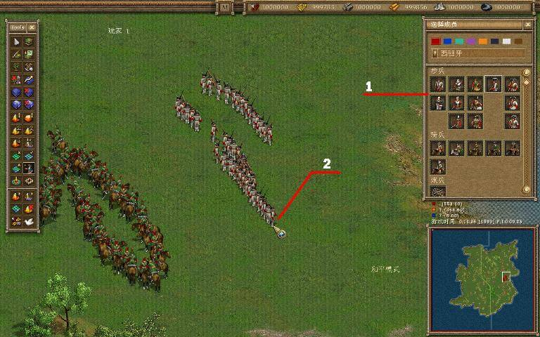
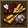
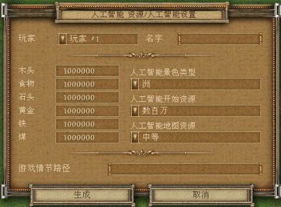

点击这个按钮

1、 在这裡可以找到需要的单位或建筑
2、 将单位放置在地图上
如果你点击的时候并没有出现单位或者建筑，请查看你是否有足够的资源来创造这个单位或建筑（如果没有足够的资源，请使用“babki”作弊代码）。当地图表面不规则或有别的单位或物体时（例如石头、矿井、别的建筑等等），建筑将不会被安置在那裡。在编辑器裡，这个道理就和在游戏中用农民建造建筑是一样的。
若放置建筑的位置不满意，可以随机移动它。选中这个建筑，然后通过键盘上的方向键 “↑” “↓” “←” “→” 来进行移动。通过这个方式，可以将建筑移到地图上的任何地方，无论是否有障碍物或地形起伏过大。
如果你需要把几个不同颜色（玩家）的单位放置到很近的地方，你应该通过点击这个按钮 打开和平模式。如果你忽略了这一步，这些不同颜色的单位将会互相攻击。再次点击这个按钮将会关闭和平模式。当你要在游戏中加载这张地图时，在你製作地图的时候就要打开和平模式。
打开和平模式。如果你忽略了这一步，这些不同颜色的单位将会互相攻击。再次点击这个按钮将会关闭和平模式。当你要在游戏中加载这张地图时，在你製作地图的时候就要打开和平模式。
除了放置一些单位外，你也要设置游戏初始资源。点击这个按钮打开资源设置菜单。在这裡，你可以为每一位游戏玩家分配游戏初始资源。但这张地图在编辑器裡被加载的时候，默认的初始资源已经被设置好了。

如果你想创建一张与电脑对战的地图，请确保一下几点已经完成：
1、农民必须被放置在地图上，他们的位置将被电脑作为一个起始位置；
2、农民放置的地方要较为空旷，以便让电脑有足够的空间建造建筑；
3、起始位置附近应该要有树木、石矿，至少有一个铁矿和金矿。最好每一种矿井有两个。
注意：电脑在狭窄的地带会发展很慢，不要在地图上创造狭窄的过道。为了让电脑正常发展，开始的时候你应该给它足够的资源（约5000左右）。